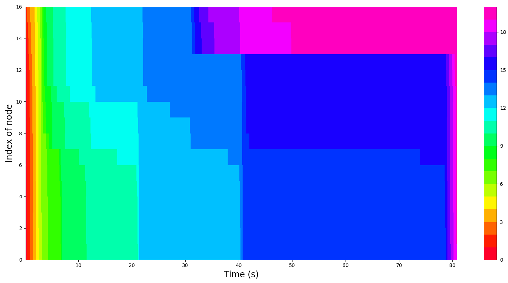

Tool
An Efficient and Flexible Simulator for Byzantine Fault-Tolerant Protocols
Table of Contents
Summary
Tool (Wang et al. 2022) is an abstract network simulator for BFT protocols.
More specific than Quantas: only BFT algorithms.
Tool vs Quantas
| Quantas | Tool | |
|---|---|---|
| Scope | All networks | BFT algorithms |
| Functionality | Benchmarking | Benchmarking, testing, verifying |
| Metric | Number of rounds | Time usage & message usage |
| Byzantine behaviors | Under development | Implemented |
| Language | C++ | JavaScript |
Byzantine Behavior
- In Quantas, attacks modify peers.
- In Tool, attacks modify messages between peers.
- Rushing attacks
- Network partition attacks
Code
- Written in JavaScript
- No activity
- Visualization with Python
Visualization

Heatmap
 Each node’s view during HotStuff+NS execution \((λ = 150; N = (250, 50))\). Each color represents a view number.
Twins
Automatic generator for Byzantine behaviors:
- Equivocation
- Double voting
- Losing internal state
References
Bano, Shehar, Alberto Sonnino, Andrey Chursin, Dmitri Perelman, and Dahlia Malkhi. 2020. “Twins: White-Glove Approach for BFT Testing.” Corr abs/2004.10617. https://arxiv.org/abs/2004.10617.
Wang, Ping-Lun, Tzu-Wei Chao, Chia-Chien Wu, and Hsu-Chun Hsiao. 2022. “Tool: An Efficient and Flexible Simulator for Byzantine Fault-Tolerant Protocols.” 2022 52nd Annual Ieee/Ifip International Conference on Dependable Systems and Networks (Dsn), June. https://doi.org/10.1109/dsn53405.2022.00038.